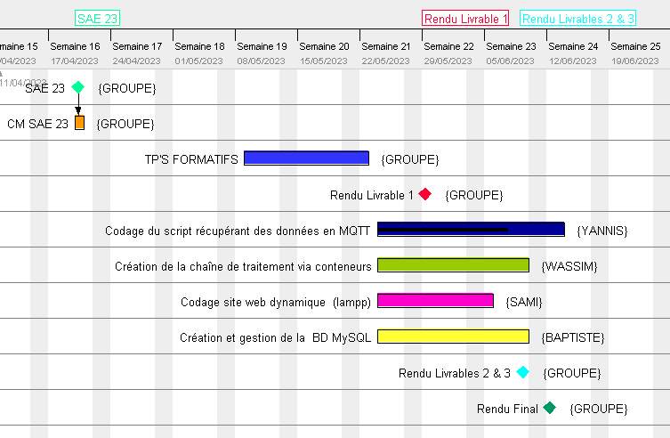
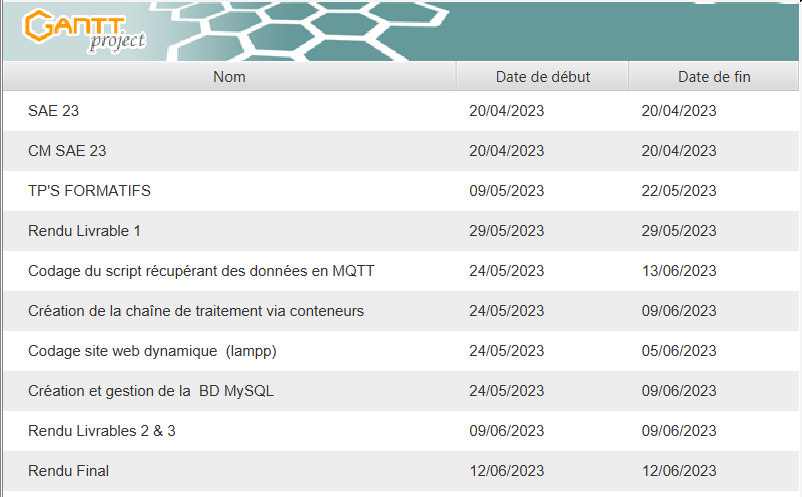
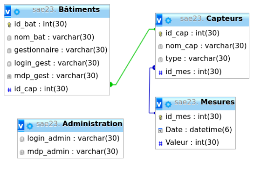
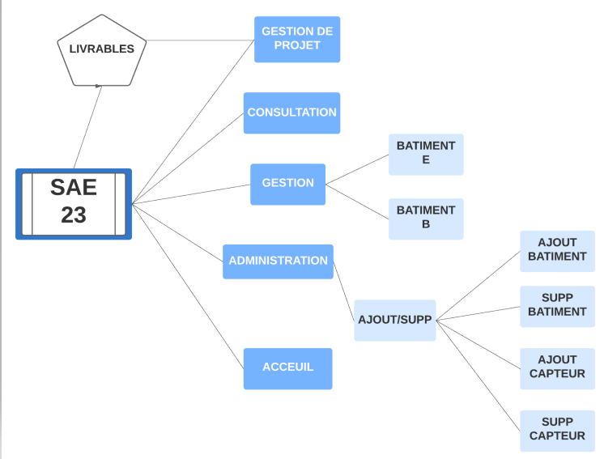
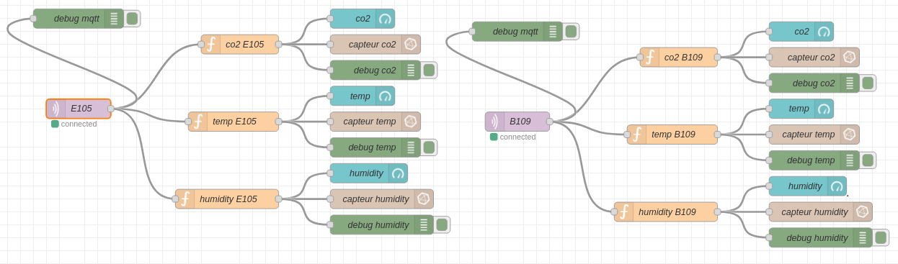
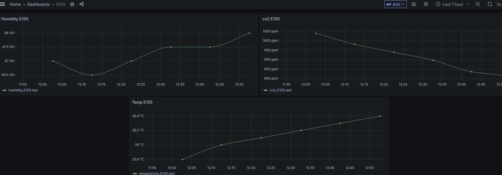
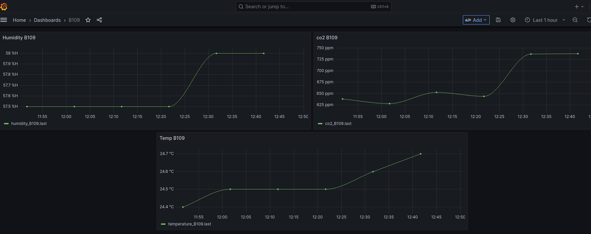

Voici le diagramme de GANTT prévisionnel qui explique les differentes phases de notre avancement !!


Voici la maniere dont nous avons procédé pour la base de donnée.

Voici la maniere dont nous avons construit notre site.

Voici quelques outils utilisés tout au long de la conception de ce projet !
Voici le Flow Node Red correspondant à notre projet.

Voici le Dashboard Grafana correspondant à la salle 105 du Bâtiment E.

Voici le Dashboard Grafana correspondant à la salle 109 du Bâtiment B.

Yannis
Je me suis occupé de coder le script permettant de récupérer les données sur un bus MQTT ainsi que de les envoyer à la base de données SAÉ23 se trouvant sur phpMyAdmin.
Pour cela, j'ai choisi le Bash (Shell) car c'est le langage de programmation avec lequel je me sens le plus à l'aise. La récupération des données ne m'a pas posé de problème.
Cependant, j'ai éprouvé beaucoup de difficultés lors de l'envoi des données vers la base de données. En effet, les commandes SQL de mon script Bash ne correspondaient
pas à la structure de la table "Mesures" destinée à recevoir les données. De ce fait, l'interaction entre mon script en Bash et la base de donnée était impossible.
J'ai pu trouver la solution en analysant plus en détail les différents champs de chaque table qui constituent la base de donnée. Dans l'ensemble,
je suis satisfait de ce que j'ai accompli par rapport au cahier des charges. En effet, j'ai réussi à coder un script récupérant les données sur un bus MQTT
en Bash et à les envoyer vers la base de donnée nommée "sae23". Malgré quelques difficultés techniques rencontrées tout au long du processus,
j'ai pu trouver des solutions appropriées pour les résoudre.
Baptiste
Dans le cadre de ce projet, j'ai été chargé de créer la base de donnée, et de gérer le dépôt github.
A la fin de ces différentes tâches j'ai rejoint mes camarades dans la réalisation de scripts en PHP et en bash pour la récupération des données et leur exploitation sur le site web de notre projet.
Pour générer ma base de donnée, je me suis servi de phpMyAdmin, un interface graphique intégré dans l'ensemble de logiciels fourni par XAMPP. J'ai créé les différentes tables et les champs qui la compose.
J'ai ensuite exporter ce que j'ai créé en un fichier SQL que j'ai ensuite partagé avec mes camarades pour que nous ayons la même base.
Par la suite, je me suis occupé de créer un dépôt github pour notre projet, j'ai rencontré quelques problèmes, j'ai en effet créé plusieurs branches après avoir créer ce dépôt et je n'étais donc pas synchronisé avec la branche principale utilisée par mes camarades.
J'ai donc téléchargé le contenu du dépôt github puis récupéré les différentes branches avant de me situer sur la branche principale et d'y ajouter mon fichier SQL.
Après avoir fait tout ça j'ai fini par rejoindre mes camarades dans la réalisation de scripts, dans un premier temps j'ai aidé à la réalisation du script de récupération des données et de l'envoi sur la table. Nous avons eu des problèmes lors de l'envoi de nos données sur la base avec l'aide de la commande mysql.
Nous avons eu des problèmes d'arguments dans notre commande car nous utilisions trop de guillemets et de "simple quote", pour résoudre ce problème je suis passé par des variables intermédiaires pour alléger la commande finale. J'ai ensuite essayé de mettre en place une crontab pour exécuter ce script automatiquement,
cependant nous avons toujours à l'heure actuelle des problèmes pour lancer ce script au démarrage de la machine, problème que nous n'avons pas si nous lançons le script régulièrement de manière plus classique.
Pour finir je me suis dirigé vers mon autre camarade pour l'aider à comprendre certaines requêtes PHP nécessaire à la réalisation de nos scripts, je n'ai pas apporté beaucoup d'aide car une grande partie du travail était déjà faite,
mais j'ai pu tout de même me montrer utiles pour certaines parties du code demandant notamment l'accès à la base de donnée pour récupérer les identifiants et mots de passe des gestionnaires.
Wassim
Dans le cadre de mon projet de SAE 23 en BUT Réseaux et Télécoms, j'ai été chargé de proposer une solution de visualisation de données publiées sur un bus MQTT,
accessible via une interface utilisateur dans un navigateur web. Pour répondre à ce cahier des charges, j'ai décidé d'implémenter une solution basée sur des conteneurs Docker, afin de mettre en place une chaîne de traitement efficace.
J'ai choisi d'utiliser plusieurs composants clés pour mon projet :
Tout d'abord, j'ai utilisé Mosquitto comme broker MQTT. Il m'a permis de recevoir et diffuser des messages sur le bus MQTT. Cela a été essentiel pour la publication et la souscription des données sur ce bus.
Ensuite, j'ai intégré Node-RED pour la programmation événementielle. Node-RED est un outil visuel très pratique, qui m'a aidé à créer des flux de données et à manipuler les messages reçus via MQTT. Cependant, j'ai rencontré une difficulté au départ avec le "msg payload".
J'ai initialement utilisé le nœud "set", mais grâce aux conseils de notre professeur référent, M. Brulin, j'ai compris qu'il était préférable d'utiliser un noeud “function” contenant la fonction JavaScript appropriée. Après avoir effectué cette correction, j'ai pu résoudre le problème.
Pour la gestion de la base de données, j'ai utilisé InfluxDB, une base de données orientée série temporelle chronologique. Cette solution était parfaitement adaptée à mon projet, car elle est conçue spécifiquement pour stocker et interroger des données temporelles.
J'ai donc pu stocker les données reçues via MQTT dans InfluxDB, en vue d'une analyse et d'une visualisation ultérieures. Enfin, j'ai utilisé Grafana pour la visualisation et la mise en forme des données métriques.
Grafana est une interface graphique conviviale qui m'a permis de créer des tableaux de bord personnalisés pour afficher les données stockées dans InfluxDB. Cela m'a offert une excellente manière de présenter les informations de manière claire et intuitive.
Globalement, je n'ai pas rencontré de difficultés majeures dans la mise en place de cette solution. Grâce à l'utilisation de Docker et à la bonne configuration de chaque composant, j'ai réussi à créer une chaîne de traitement fluide pour la visualisation des données MQTT.
Je suis satisfait d'avoir surmonté les problèmes liés au "msg payload" en suivant les conseils de mon professeur référent, ce qui m'a permis de réaliser un projet conforme aux attentes du cahier des charges.
Sami
Au cours de mon projet, j’ai eu comme responsabilité de créer un site Web dynamique sur lequel nous devions avoir la possibilité premièrement :
- D’administrer des bâtiments et des capteurs. Pour ce faire, j’ai construit ma base sur un langage requis qui était le PHP. Ce langage n’est pas lu par un navigateur en temps normal et c’est pourquoi nous devions l’héberger sur un serveur web distant lampp installé directement sur une machine virtuelle. Afin d’administrer j’ai créé plusieurs fichiers (.php) contenant du langage HTML mais aussi du PHP car les deux peuvent cohabiter au sein d’un même fichier et d’une même page.
Il était demandé afin de sécuriser l’administration d’utiliser les sessions, les sessions en PHP sont un mécanisme permettant de stocker et de maintenir des données spécifiques à un utilisateur tout au long de sa navigation sur un site web. Les sessions sont utilisées pour suivre l'état de l'utilisateur entre les différentes requêtes HTTP, ce qui permet de maintenir des informations persistantes à travers différentes pages ou actions.
J’ai donc créé une page d’administration ou il était nécessaire de se connecter pour être redirigé vers la page ou nous pouvions supprimer ou ajouter des capteurs et bâtiments. Si le mot de passe ou identifiant était incorrect où inexistant nous étions redirigés vers une page nous l’indiquant (nommé login_error).
-De gérer des bâtiments. Pour ce faire j’ai utilisé le même procédé que l’administration en présentant les données sous formes de tableaux et il était impératif d’adapter les requêtes PHP qui allaient chercher les données dans la base.
Pour la base de données, un fichier PHP servait à s’y connecter ou y était indiqué le login, l’identifiant le nem de la base de données afin d’y accéder, il à été utilisé lui aussi dans la plupart des autres fichiers.
Pour ce qui est des problèmes rencontrés, la suppression de capteurs n’a pas marché malgré de nombreuses tentatives et j’ai donc fais appel à mes camarades qui ont résolu le problème qui se tramais au niveau de l’adaptation des requêtes PHP qui elles-mêmes sont faites via du SQL qui va chercher les données dans la base.
Je tiens à préciser que la cohésion d’un groupe et l’esprit d’équipe est un atout majeur pour réussir et c’est ce qui a mené a bien notre projet.
Voici la maniere dont nous avons procédé pour la base de donnée.
Voici la maniere dont nous avons procédé pour la base de donnée.
Honnetement